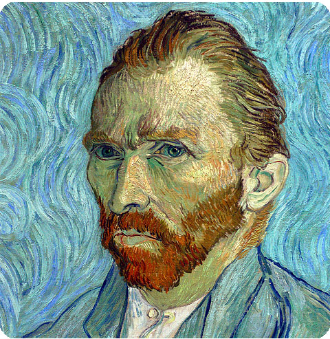

{kind=link}
![ Musée d'Orsay Waar de boulevard St-Germain het 7e bereikt, buigt hij naar de rivier af en loost zijn verkeer via de Pont de la Concorde op de Rive Droite. Aan de oostkant van dit puntje Parijs tussen de rue de l`Université en de rivier liggen de kunsthandels en antiekzaken van het Carré Rive Gauche. Aan de westkant ligt het Musée d'Orsay. Door zijn opwindende verzameling impressionisten en postimpressionisten is dit een van de drukst bezochte attracties van Parijs. Het museum heeft echter meer te bieden dan Monet en Renoir. De collectie beslaat de artistiek revolutionaire periode tussen 1848 en 1914, tussen het einde van de klassieke tradities van het Louvre en het begin van de moderne tijd die in het Centre Pompidou aan de orde komt.Het gebouw werd voor de Wereldtentoonstelling van 1900 ingehuldigd als treinstation en slaat een fantastische brug tussen 19de-eeuwse classicisme en het industriële tijdperk. De elegante stenen voorgevel verbergt de staal-en-glasconstructie van de spoorwegboog erachter. Tot 1939 was dit het station voor treinen uit Zuidwest- Frankrijk, maar na de oorlog werden de treinen te lang en raakte het in onbruik. De Gaulle gebruikte het op 19 mei 1958 als achtergrond voor zijn coup d’état, maar in 1960 was het zo vervallen dat Orson Welles het volmaakt vond voor zijn verfilming van Kafka`s nachtmerrieachtige Das Urteil. Ondanks zijn luisterrijke geschiedenis werd het station alleen van de ondergang gered door het enorme publieke protest tegen de afbraak van Les Halles. De populaire Milanese architecte Gae Aulenti kreeg in 1986 de opdracht er een museum van te maken. Ze kwam met een doordacht, mooi ontwerp met één groot minpunt: de impressionistische afdeling zit op zolder, waardoor juist het deel dat de meeste bezoekers trekt het krapst behuisd is. Toen we dit schreven was de grote renovatie bijna klaar. Het nieuwe Pavillon Amont is bestemd voor hangend werk - en is veel beter te bereiken dan de galeries met impressionistisch werk op de zolderverdieping - maar dat betekent wel dat de locatie van veel schilderijen waarschijnlijk verandert en de algemene indeling van het museum misschien ook. De basisplattegrond zal echter amper veranderen en je kunt je nog steeds goed beperken tot een bepaalde afdeling. Elke afdeling heeft zijn eigen sfeer. Chronologisch gezien begint de collectie op de begane grond onder het enorme gewelf van glas en staal en gaat daarna naar de zolderverdieping met de impressionisten. Daarna vervolgt ze met de postimpressionisten op de balkons en galerijen op de middelste verdieping die over het hoofd-'schip' uitkijkt. Het café op de bovenste verdieping - met in de zomer een terras en prachtig uitzicht op Montmartre door de enorme stationsklok - en het schitterend vergulde restaurant en de salon de thé op de tussenverdieping zijn geweldige plaatsen om even bij te komen. Een kop thee met iets lekkers kost circa € 12.](preview://img/orsay1b.jpg){kind=link}
Musée d'Orsay
Waar de boulevard St-Germain het 7e bereikt, buigt hij naar de rivier af en loost zijn verkeer via de Pont de la Concorde op de Rive Droite. Aan de oostkant van dit puntje Parijs tussen de rue de l`Université en de rivier liggen de kunsthandels en antiekzaken van het Carré Rive Gauche. Aan de westkant ligt het Musée d'Orsay. Door zijn opwindende verzameling impressionisten en postimpressionisten is dit een van de drukst bezochte attracties van Parijs. Het museum heeft echter meer te bieden dan Monet en Renoir. De collectie beslaat de artistiek revolutionaire periode tussen 1848 en 1914, tussen het einde van de klassieke tradities van het Louvre en het begin van de moderne tijd die in het Centre Pompidou aan de orde komt.
Het gebouw werd voor de Wereldtentoonstelling van 1900 ingehuldigd als treinstation en slaat een fantastische brug tussen 19de-eeuwse classicisme en het industriële tijdperk. De elegante stenen voorgevel verbergt de staal-en-glasconstructie van de spoorwegboog erachter. Tot 1939 was dit het station voor treinen uit Zuidwest- Frankrijk, maar na de oorlog werden de treinen te lang en raakte het in onbruik.
De Gaulle gebruikte het op 19 mei 1958 als achtergrond voor zijn coup d’état, maar in 1960 was het zo vervallen dat Orson Welles het volmaakt vond voor zijn verfilming van Kafka`s nachtmerrieachtige Das Urteil. Ondanks zijn luisterrijke geschiedenis werd het station alleen van de ondergang gered door het enorme publieke protest tegen de afbraak van Les Halles. De populaire Milanese architecte Gae Aulenti kreeg in 1986 de opdracht er een museum van te maken. Ze kwam met een doordacht, mooi ontwerp met één groot minpunt: de impressionistische afdeling zit op zolder, waardoor juist het deel dat de meeste bezoekers trekt het krapst behuisd is.
Toen we dit schreven was de grote renovatie bijna klaar. Het nieuwe Pavillon Amont is bestemd voor hangend werk - en is veel beter te bereiken dan de galeries met impressionistisch werk op de zolderverdieping - maar dat betekent wel dat de locatie van veel schilderijen waarschijnlijk verandert en de algemene indeling van het museum misschien ook. De basisplattegrond zal echter amper veranderen en je kunt je nog steeds goed beperken tot een bepaalde afdeling. Elke afdeling heeft zijn eigen sfeer. Chronologisch gezien begint de collectie op de begane grond onder het enorme gewelf van glas en staal en gaat daarna naar de zolderverdieping met de impressionisten. Daarna vervolgt ze met de postimpressionisten op de balkons en galerijen op de middelste verdieping die over het hoofd-'schip' uitkijkt. Het café op de bovenste verdieping - met in de zomer een terras en prachtig uitzicht op Montmartre door de enorme stationsklok - en het schitterend vergulde restaurant en de salon de thé op de tussenverdieping zijn geweldige plaatsen om even bij te komen. Een kop thee met iets lekkers kost circa € 12.